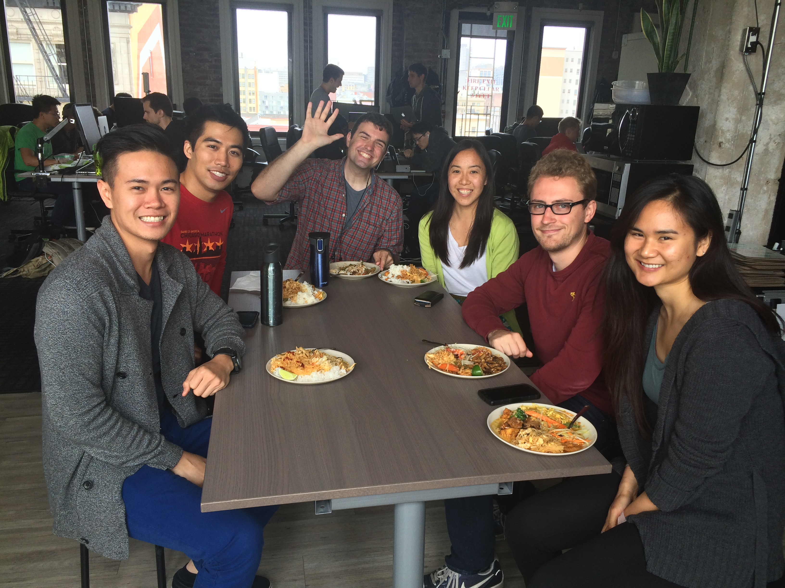

a software engineer
I am a software engineer.
Just writing that line evokes a series of emotions. The immediate reaction is self-doubt and cognitive dissonance. Am I really an engineer or I am just pretending? I couldn’t understand [insert technical concept here].
If I sit with my self-doubt for a few moments, it subsides. In its place, this deep sense of calm and peace fills me. My body is light and airy. There is space to maneuver and breathe.
I am a software engineer.
Yesterday, I officially began my term as a Hacker in Residence at Hack Reactor. In this role, I will spend twenty hours per week conducting technical interviews, debugging code on Help Desk, and mentoring incoming students. In the remainder of my time, I will work on personal projects — learning new technologies, stacks, and building out my dream products. I am beyond stoked about this next step in my life.
For once in my life, I am exactly where I need to be. I no longer feel the need to travel to new countries, searching for a place for belong. This place is here for me now, at Hack Reactor in San Francisco.
Tomorrow, twenty-eight of my cohort mates will participate in Hiring Day, and take the first steps towards finding new jobs as software engineers. While I will attend, I will not yet be interviewing. My residency precludes my job search.
I am glad that there is time, and that I am not rushing towards a paycheck or a job — I have always been in motion and for once it feels right to stay still. To teach, to reflect, to cement the knowledge I’ve gained in the past three months. To make my Hack Reactor experience more tangible and less fleeting.
Learning to code while at Hack Reactor has been the most empowering journey of my life.
While still at Deloitte, I targeted Hack Reactor as my next step. For the next months, I centered every decision I made on this goal. In India, I coded in lieu of sleep and gym time; in the states, I chose to live at home with my parents and forgo holidays to study. These decisions culminated in a series of fortunate events — interviewing and being accepted to Hack Reactor on October 18, 2014, saving enough money to finance my own education, starting class on March 20, 2015. In a few days, graduation will be another major event in my life.
I recognize now that I am capable of anything. I can learn new technologies. I can articulate what I need, and I can change things that I do not like. I am powerful.
I am a software engineer.
